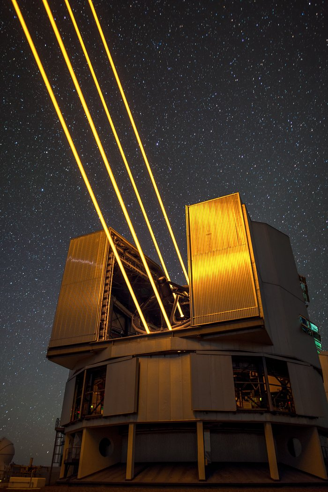

4 Laser Guide Star Facility on UT4 of the Very Large Telescope (VLT) at ESO's Paranal Observatory in Chile. Credits ESO/Juan Carlos Muñoz-Mateos.
Quasars — the bright cores of galaxies powered by supermassive black holes — are among the brightest objects in the Universe.
Thanks to NASA's JWST we know that they already existed less than a billion years after the Big Bang.
But how did they grow so fast? And how do powerful outflows shape their host galaxies?
Our team has been granted over 200 hours
on ESO'sVery Large Telescope,
specifically the MUSE instrument,
to map ionized gas flows in the centers of nearby quasars.
Starting in autumn 2024, this survey will provide a spatially resolved view of quasar-driven feedback and accretion.
Our goal is to uncover if, and how, the quasar phase shapes galaxy evolution and black hole growth across cosmic time.
I am the Principal Investigator leading the observations.
If you’re interested in joining, collaborating, or accessing our data, get in touch. We’d love to hear from you!